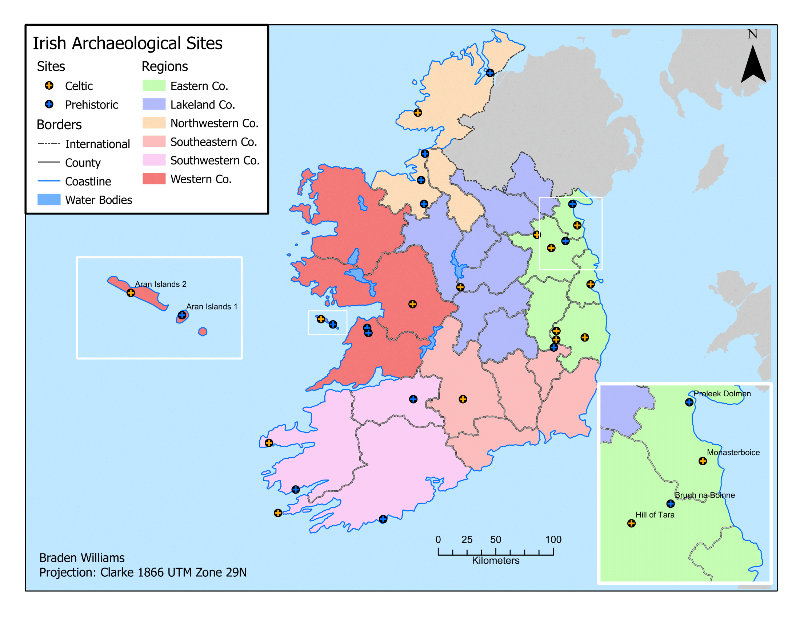
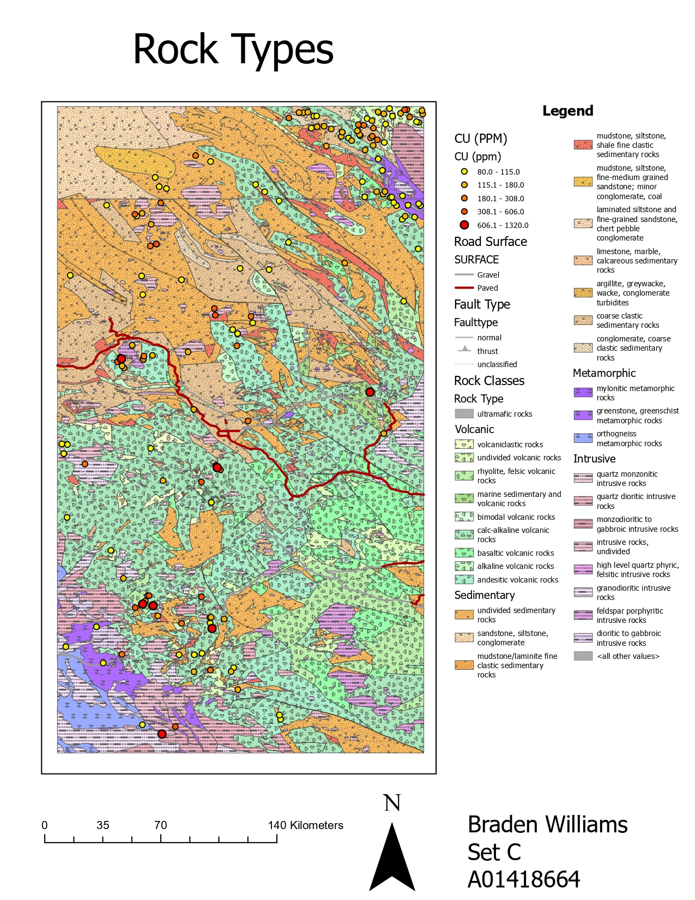

I’m a GIS professional based in Vancouver with a strong foundation in geospatial technologies, cartographic design, and spatial analysis. After earning my B.A. in English Literature from UBC, I transitioned into Geographic Information Systems through an advanced diploma program at BCIT, where I completed extensive coursework in GIS fundamentals, remote sensing, Python scripting, spatial databases (Oracle/PostgreSQL), ArcGIS Pro, web mapping, and project planning. My experience includes working with the City of Richmond on GIS data integration, web app design using Esri Experience Builder, and thematic mapping for urban infrastructure. I’m passionate about using spatial tools to communicate complex information clearly and to support decision-making in urban planning, environmental management, and public safety. Outside of GIS, I’m a lifelong musician with performance and teaching experience—and I bring the same creativity and precision from my music background into every map and analysis I create.

Below are some of the projects I have worked on.
This map shows Irish Archaeological Sites within the different regions of Ireland

Let's connect!
Linkedin